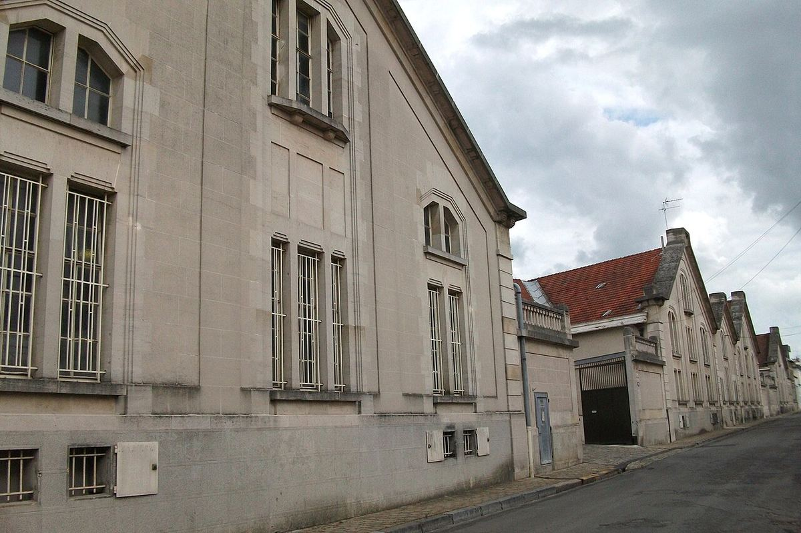

EFFERVESCENT
Maison familiale rémoise dont les origines remontent à 1776, créatrice de Cristal et propriétaire d’un vaste vignoble en Champagne.

Les origines de la maison remontent à 1776, date de la fondation à Reims d’une maison de négoce de champagne. Louis Roederer en hérita en 1833 et lui donna son nom. Sous sa direction, la maison acheta des vignes, chose rare à l’époque chez les négociants, et s’ouvrit aux marchés étrangers, surtout la Russie.
En 1876, la maison créa pour le tsar Alexandre II un champagne spécial embouteillé dans un verre transparent : Cristal. Après la révolution russe, il cessa d’être élaboré pour la cour et fut, des années plus tard, commercialisé plus largement, devenant l’une des cuvées de prestige les plus connues.
Louis Roederer reste une maison familiale et indépendante, dirigée par la famille Rouzaud. L’une de ses signatures est son vaste vignoble en propre, avec des parcelles dans la Montagne de Reims, la Vallée de la Marne et la Côte des Blancs, qui fournit une grande partie des raisins utilisés. Une partie des parcelles est conduite en agriculture biologique et en biodynamie.
Outre Cristal, la gamme comprend le brut sans année Collection, qui a remplacé en 2021 l’ancien Brut Premier, des millésimés, des blanc de blancs et des rosés. Le groupe familial possède aussi d’autres domaines, comme Domaines Ott en Provence ou le Château Pichon Longueville Comtesse de Lalande à Pauillac.
C’est l’une des rares grandes maisons de Champagne restées indépendantes et familiales.